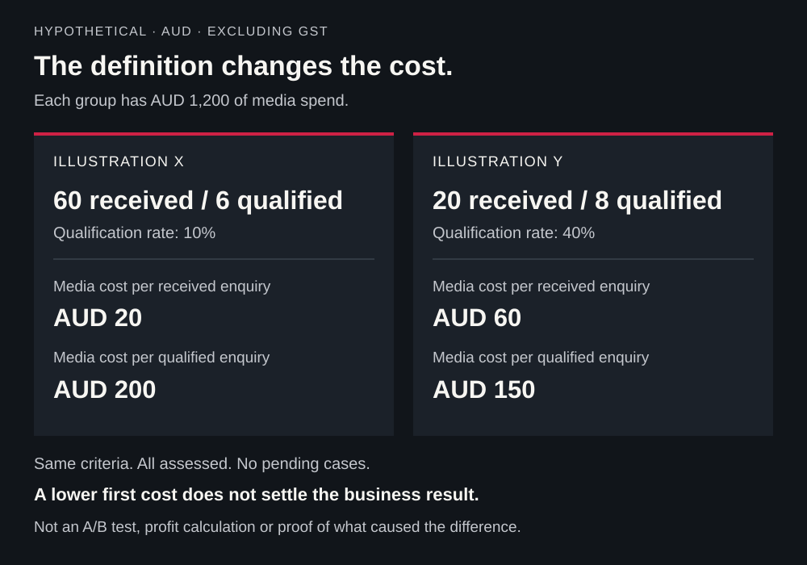

Before you spend on Facebook and Instagram ads, be clear about the work you want to attract and what happens when someone responds. The campaign can show your service and prompt contact. Your team still needs to assess whether each request fits.
Say you run a residential landscaping business serving selected Perth suburbs. You design and build gardens, but you do not offer routine maintenance. This is a hypothetical example. An ad that simply promises “all your garden needs” leaves people guessing and can bring requests you cannot take on.
Start with an offer you can explain and support, then plan the creative, contact route and follow-up around it. A low cost per click or form submission is only part of the picture. You need to know what arrived, whether it suited your business and what it cost to handle.
What can Facebook and Instagram ads contribute?
Visual advertising can make a service easier to understand. A landscaping business might explain its project process, show genuine completed work or answer a question that prevents someone from enquiring. People can encounter that material while using social platforms, including people who already have a relevant need.
The possible benefit is discovery and a clearer basis for taking the next step. It depends on the message, the audience, the service and the response experience. Appearing in someone's feed does not confirm that the person wants a quote or can use the service.
Meta describes its ad recommendation system as using predictions across multiple stages of delivery. Those predictions do not replace the business's definition of a suitable opportunity.
Avoid a rigid division in which social ads are only for awareness and search ads only reach ready buyers. Both can play different roles in a customer's decision. The useful comparison is the need you want to address, the evidence available and the resources required to respond.
Define the business result before choosing campaign settings
“Get more leads” needs a definition. For a local service, a useful enquiry might concern work you actually offer, at a service address you can cover, with enough information to arrange an appropriate next step.
Write that definition before choosing settings. Then ask the campaign owner to explain three separate decisions:
- Campaign objective: the broad purpose selected in the platform.
- Conversion location or destination: where the intended action should happen.
- Performance goal: the result the delivery setup is intended to pursue.
Meta's public campaign objective training distinguishes these elements. Available combinations and names should be checked in the current account, rather than assumed from an older screenshot.
The business result and the measured platform action also need to be distinguished. An educational campaign may reasonably aim to help people understand a service. A campaign evaluated on useful enquiries needs evidence of receipt and qualification. Neither a general objective label nor an optimisation choice guarantees the eventual commercial outcome.
Make the offer and its evidence clear
The offer is what someone is being invited to consider or do. It can be a quote request, an initial conversation or another step that reflects the real service. It does not have to be a discount.
Before producing ads, answer:
- What service is available, and what work is excluded?
- Where can the work be delivered?
- What information does the business need to assess a request?
- What happens after someone responds?
- What material conditions would affect the decision to enquire?
For the Perth landscaper, that means showing garden design and construction, making the service area clear and explaining what a quote request involves. If routine maintenance is not available, the ad and destination should make that clear too.
Use evidence people can assess: actual project context, a clear explanation of the process and genuine customer feedback used with permission. A portfolio image needs to represent work you can truthfully claim. A testimonial should describe a real experience. Do not invent a project result or imply that a generated image shows completed customer work.
The ACCC's social media promotion guidance explains that advertising claims on social media must be truthful, accurate and supportable. That includes images, prices and descriptions of benefits. Make material conditions clear in the overall offer, rather than relying on a later explanation to repair a misleading impression.
Check who the campaign is meant to reach
Describe the people and work the business can serve. Separate that from assumptions such as “our customers must have these interests” or “everyone seeing this ad lives inside our service area”.
Meta has described audience suggestions and separate delivery controls in its explanation of Advantage+ audiences. That historical explanation is useful for understanding the distinction; check what is a suggestion, constraint or exclusion in the actual campaign today.
Do not assume every audience input is a strict boundary, or that one broad or narrow approach is best for every service. The decision needs to account for the offer, available data, necessary restrictions and the evidence the campaign produces.
For local work, confirm the address where the service is needed during assessment. A person can arrange work for a property somewhere other than their current location. Advertising settings and a plausible customer profile are not substitutes for that check.
Decide what the creative should explain
Creative material includes the idea, message, image or video and next action. Different formats can express the same idea; changing a crop or colour does not necessarily test a different reason to enquire.
Meta's creative diversification training distinguishes concepts, motivators and formats. Use that distinction to prepare material around real customer questions.
For the fictional landscaper, possible concepts include:
| Concept | Question it addresses | Material needed |
|---|---|---|
| Explain the quote process | What will happen if I enquire? | Actual steps, required information and conditions |
| Explain a completed project | Can this business handle relevant work? | Genuine project material, context and permission |
| Clarify service scope | Is this the kind of work I need? | Accurate inclusions, exclusions and area coverage |
These are proposals, not proven winning ads. A useful hypothesis might be that explaining the quote process will help suitable prospects provide a more relevant enquiry. The campaign then needs a way to assess that question.
Prepare and preview versions for the placements being used. Check framing, readable text, captions where appropriate and whether the main point survives the presentation. Review any automated edits against the service and claim you intended to communicate. Do not assume every automatic adjustment preserves important context.
Choose a contact route the business can handle
Meta describes lead-generation routes involving forms, conversations and calls. Its public lead-quality training also distinguishes website and instant forms. Check which options are available and appropriate in the current setup.
The choice is a design and operational decision as well as an advertising one.
| Route | Reason to consider it | What needs to work afterwards |
|---|---|---|
| Website enquiry | The person needs more context, examples or explanation before contacting | A clear page, working contact journey and confirmed delivery |
| Instant form | A direct initial contact within the Meta experience suits the offer | Relevant questions, retrievable lead records and owned follow-up |
| Messaging | A conversation can clarify scope, availability or the next step | Someone available to respond and record the outcome |
There is no universal rule that instant forms produce poor prospects or that a website produces better customers. Review the actual requests, assessment coverage and costs. A simpler first step can still require substantial work after submission. If people reach your website but few useful requests arrive, our guide to website visits but few enquiries helps you check the page and contact journey.
Agree who receives the contact, who assesses fit and what happens next. Set expectations that the team can meet. An acknowledgement is useful, but it does not complete the conversation or sales follow-up.
If a controlled test of delivery is authorised, follow it through to the receiving record and responsible person. Keep test records separate from ordinary reporting and follow-up. A button click, a form event, a received enquiry and a qualified opportunity describe different facts.
Budget for the campaign and the work around it
Separate media spend from management, creative production, page work, tools and the effort of handling enquiries. Ask what is included in a proposal, what material the business must supply and who can authorise changes.
Before activating anything, confirm the budget period, spending rules and controls in the current account. Choose an amount the business can afford to use for learning, assign someone to monitor it and define the question that investment should help answer.
There is no sensible universal starting spend or cost per lead for every Australian service business. Economics, demand, creative resources, tracking quality and capacity differ. A fixed budget or number of days does not guarantee enough useful evidence to make a decision.
Measure what arrives, not just what the platform records
Define received enquiries and qualification criteria before reviewing performance. Deduplicate repeated contact about the same opportunity and keep unassessed requests visible. A missing assessment is not proof that the enquiry was unsuitable.
Record won opportunities separately from distinct first-time customers. An existing customer may buy another job, and one customer can have more than one opportunity. Keep those units clear when evaluating sales or acquisition costs.
For website measurement, Meta describes the Pixel and Conversions API as complementary tools. Their presence does not establish that events are accurate or enquiries are received. Ask the responsible specialist to check what each event represents, whether the same action is counted twice and how later outcomes can be associated with the contact.
Understand what data is collected and shared before implementing tracking or sending customer information. The OAIC's Australian tracking pixel guidance explains why collection, disclosure and identifiability matter. Server-side delivery or hashing does not itself supply permission or settle privacy obligations.
Check the attribution definition in the report
An attributed result receives credit under a model, window and set of rules. It is not automatically a unique new customer or proof of an additional sale caused by the ad.
Meta announced changes to click and engagement attribution in March 2026. The practical lesson is to check the definitions and settings in the report being used, including the action and time period, rather than copying a universal default from an older guide.
Compare the report with business records and make unexplained gaps visible. Some opportunities remain open, and some source information may be incomplete. Do not add separate platforms' attributed results and label the total unique customers.
A worked example: when cheaper enquiries cost more
The figures below are entirely hypothetical. They compare two fictional, non-overlapping enquiry groups with the same stated media spend. Both have been fully assessed under the same qualification criteria; there are no pending assessments. Amounts are AUD, consistently excluding GST.
This is an arithmetic illustration, not an A/B test, a forecast, a benchmark or a Ranking Rebels result.
| Measure | Illustration X | Illustration Y |
|---|---|---|
| Media spend | AUD 1,200 | AUD 1,200 |
| Unique received enquiries | 60 | 20 |
| Qualified enquiries | 6 | 8 |
| Media cost per received enquiry | 1,200 ÷ 60 = AUD 20 | 1,200 ÷ 20 = AUD 60 |
| Qualification rate | 6 ÷ 60 = 10% | 8 ÷ 20 = 40% |
| Media cost per qualified enquiry | 1,200 ÷ 6 = AUD 200 | 1,200 ÷ 8 = AUD 150 |
The lower cost per received enquiry in X does not produce the lower cost per qualified enquiry in this example. That does not prove why the groups differ or which would be more profitable. Customer outcomes, revenue, delivery costs, production, management and follow-up costs have not been supplied.
For a real review, state the group, observation cut-off, assessment coverage and costs included. Keep pending outcomes visible. If a denominator is zero, show the counts and spend, and report the rate or cost as unavailable rather than inventing a zero cost.

Decide what you need to learn
Before comparing creative versions, write the question and outcome. Is the issue understanding the service, generating a received enquiry or improving the fit of requests?
Several ads running together do not automatically form a controlled experiment. Differences in delivery, audience, timing, offer or handling can affect the comparison. Meta's public testing course distinguishes creative testing, A/B tests and lift studies. Use an appropriate design when the question requires a controlled comparison; do not declare a causal winner from ordinary delivery totals alone.
Keep a record of changes and choose a review around the evidence needed and the service's sales cycle. Investigate broken delivery promptly. Give unresolved commercial outcomes a suitable opportunity to develop. Neither a handful of contacts nor the lowest reported cost is a universal success rule.
If the contact route does not deliver, a central claim cannot be supported or nobody can own incoming responses, address that gap before a paid launch. Other uncertainties, such as which genuine creative concept helps people understand the service, can become questions for a planned test.
Before investing, be able to describe the offer, supporting evidence, current campaign choices, creative resources, contact route, qualification, owner, costs and review question. Those answers provide a concrete basis for a campaign your business can respond to and evaluate.
To discuss that scope, explore Ranking Rebels' paid advertising services. Bring your service, offer, available creative material and current enquiry process to the conversation.